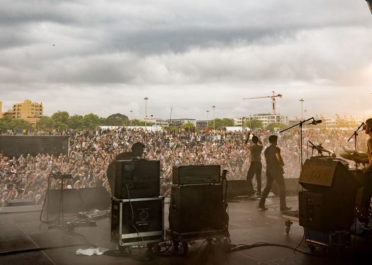

Festivals · Music
Primavera Sound Porto 2027
- Dates
- –
- Venue
- Parque da Cidade, Porto
- Location
- Porto, Portugal
- Format
- In-person
- Category
- Music
- Industry
- Music festival
- Organiser
- Primavera Sound
- Official website
- https://www.primaverasound.com/en/porto
About
Dates are local to the host city (Western European Time, UTC+0 / UTC+1 in summer).
Topics: indie, rock, pop, electronic.
No organiser attendance figure found on the official pages fetched 24 Nov 2026. Ranked by our estimated size tier 'large' (30,000-100,000 attendees/visits), a judgement from format, venue and scale, not an official number.
Sources
- Official — https://www.primaverasound.com/en/porto
Hotels
- Crowne Plaza Porto — 5★ · Avenida da Boavista, 1466, 4100-114 Porto · 3.4 km from the venue · Price on request
- HF Ipanema Park — 5★ · Rua de Serralves, 124, 4150-702 Porto · 3.0 km from the venue · Price on request
- PALACETE SEVERO — 5★ · Rua Ricardo Severo 21 e 83, 4050-515 PORTO · 4.8 km from the venue · Price on request
- PORTO PALÁCIO HOTEL BY THE EDITORY — 5★ · Avenida da Boavista, 1269, 4100-130 Porto · 3.6 km from the venue · Price on request
- Sheraton Porto Hotel & Spa — 5★ · Rua Tenente Valadim, 146, 4100-476 Porto · 3.4 km from the venue · Price on request · Venue page
- Vila Foz Hotel & Spa — 5★ · Av. de Montevideu, 236, 4150-516 Porto · 1.0 km from the venue · Price on request
- BessaHotel Boavista — 4★ · Rua Dr. Marques de Carvalho, 111, 4100-325 Porto · 3.0 km from the venue · Price on request
- Eurostars Matosinhos — 4★ · Rua Heróis de França, n.º 536, 4450-159 Matosinhos · 1.8 km from the venue · Price on request
- Portus Cale Hotel — 4★ · Avenida da Boavista, 1060, 4100-113 Porto · 3.8 km from the venue · Price on request
- Sea Porto Hotel — 4★ · Avenida Dom Afonso Henriques, nº 354, 4450-009 Matosinhos · 1.9 km from the venue · Price on request